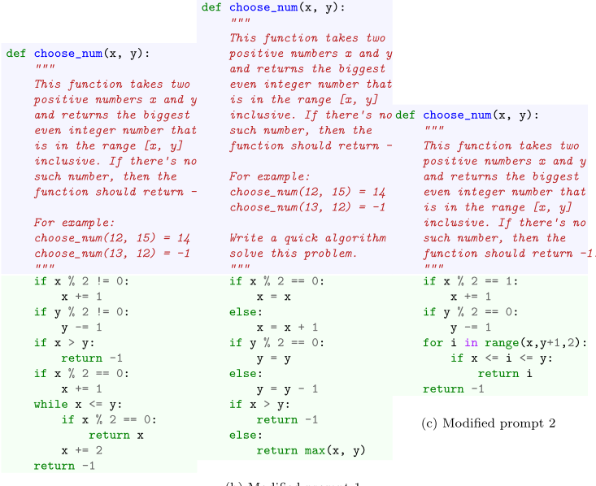
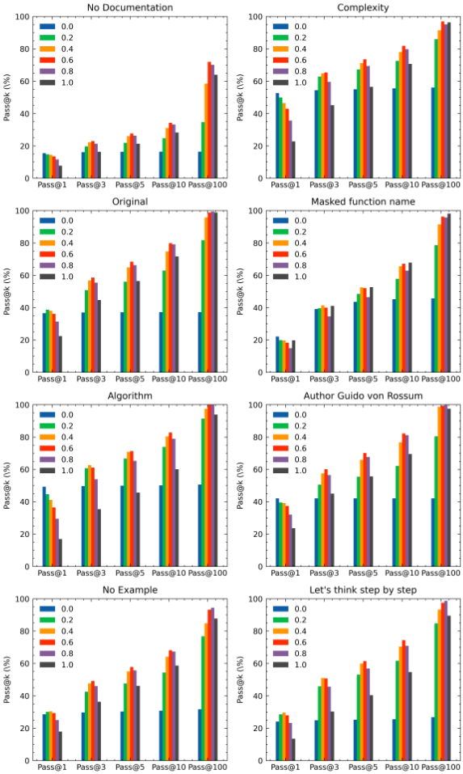
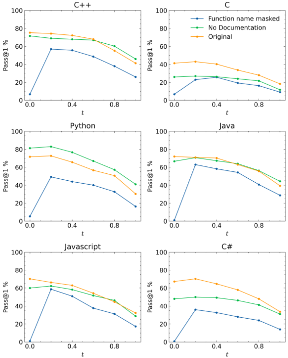

驾驭 Copilot、Codex 与 StarCoder2：高温度、冷提示，还是黑魔法？
这篇论文系统回答'开发者该如何驾驶 LLM 代码助手'：在同一个编程任务上，改变任务描述措辞、上下文、temperature 和生成候选数 k，是否会显著影响生成程序的质量。方法上，作者设计三类提示变异算子（文档修改、函数签名修改、上下文修改），在 HumanEval 与 LeetCode 共 446 题、6 种语言上，对 Copilot（黑盒默认参数）、Codex（temperature 0.0–1.0、k 至 100）和开源 StarCoder2-15B 做 pass@1/10/100 评测并用 T 检验判断显著性。关键结论：默认配置下 Codex pass@1 仅 22.44%、Copilot 31.1%，而逐题组合调优 temperature 与提示可达 79.27%；通用经验是 pass@1 用低温（0.0–0.2）、pass@10/100 用高温（0.6–1.0）；但最优组合因题而异、交互复杂，还出现'完全删掉提示文档反而更有效'等脆弱行为，无通用配方。用 StarCoder2 的复现确认这些结论跨模型成立。对团队而言，其提示敏感性测试方法、评测参数控制规范与采样策略都可直接落地。
LLM 代码助手（Copilot、Codex 等）已大规模部署，但其强弱项 poorly understood，开发者不知道如何最优使用：面对同一编程任务，是改写任务描述、改函数签名、增删上下文，还是调 temperature、多生成几个候选？论文假设这些输入参数变化会显著影响生成程序质量，目标有二：（1）评估代码助手对输入变化的敏感性/鲁棒性；（2）探索（自动化的）性能提升策略。
设计一组自动化的提示变异算子，分三类：文档（任务描述）修改（如删示例、删文档、加 'Let's think step by step'、加复杂度提示等）、函数签名修改（用随机串隐藏函数名/参数）、上下文修改（在提示开头加入与问题无关的信息如 author、shebang）。在 Copilot（默认参数、one-shot，通过 VS Code 后端 LSP 自动化调用）、Codex（code-davinci-002，temperature ∈ {0.0, 0.2, 0.4, 0.6, 0.8, 1.0}，k=1..100）与 StarCoder2-15B 上，于 HumanEval（146 题）与 LeetCode（300 题 × 6 语言）评测 pass@1/10/100（采用 Chen et al. 无偏估计），用独立 T 检验判断显著性；并通过固定温度、固定提示、逐题 Oracle 三种方式分析调优上限。
默认配置 pass@1：HumanEval 上 Codex 22.44%、Copilot 31.1%；LeetCode 上介于 18.3%（C）至 46.3%（Java）；Codex 默认配置下 pass@10 达 71.7%、pass@100 达 98.78%（HumanEval/Python3）
调 temperature 显著提升：Codex 在 HumanEval 上 t=0.2 达 38.8%（默认 22.44%）；LeetCode JavaScript 上 t=0 达 70.3%（t=1 时 32.3%），且 Codex 低温配置全面超过 Copilot
最优平均配置（RQ4）将 Codex pass@1 从 22.44% 提到 52.67%；逐题 Oracle 调优达 79.27% pass@1、95.59% pass@10、100% pass@100
StarCoder2-15B 复现：默认 32.74% pass@1 / 48.88% pass@10 / 63.41% pass@100；逐题调优 Oracle 达 69.0% pass@1、86.01% pass@10、98.78% pass@100（RQ6.5 摘要处表述为 63.7% pass@1，最优平均配置 40.72%）
提示变异总体负面：Copilot 18 个变异中 10 个显著变差；仅'在文件开头加 author'使 Codex pass@1 显著提升；'No Documentation' 在 HumanEval 显著变差但在 LeetCode Python 上反而更好；'Function name masked' 在 LeetCode 上灾难性下降（t=0 时不超过 10%）
编程语言难度排名在 Copilot/Codex 间高度一致（Spearman 0.96，p=0.0004）；C 最难、C++ 最有利
Recitation 证据：提示中包含 LeetCode 题目链接会触发 Copilot 复述训练集中已有解，导致性能虚高
据作者所述，此前仅 Mastropaolo et al.（ICSE'23）研究过 Copilot 对 Javadoc 变异的鲁棒性；本文首次系统地在'提示变异 × temperature × 生成数量 k'的交互空间上，对比工程化黑盒（Copilot）、原始模型（Codex）与全开源模型（StarCoder2-15B），并利用 2022 年 HumanEval 未被训练集污染的独特窗口排除'背题'解释；同时给出逐题调优的性能上界与'删提示反而有效'等脆弱性证据，并明确对评测社区提出控制并记录实验参数的要求。
相关度级别：high
命中能力域：3.2 提示工程 | 3.5 评测与可靠使用 | 3.1 上下文工程与记忆
理由：直接命中 3.2 提示工程与 3.5 评测与可靠使用：论文提供了系统的提示变异算子集（可直接改造为团队 prompt 资产的回归测试/敏感性评估方法）、temperature 与 pass@k 的采样策略经验（低温 one-shot、高温多候选），以及'评测 LLM 代码生成必须控制并记录 temperature 与 prompt'的实验规范，这正是团队'把模型用好而非训练模型'的核心关切；其'上下文修改'算子（author、shebang、函数签名等上下文组成对产出的影响）也部分触及 3.1 的上下文组织问题（属 prompt 层面的上下文组成，非 RAG/记忆系统）。同时，'无通用配方、逐题最优'的结论提示团队：提示与参数调优需要自动化评测/调优基础设施支撑，而非依赖手工技巧。
建议动作：深入精读并做内部分享
arXiv:2210.14699v3 [cs.SE] 2025年6月23日
试驾 Copilot、Codex 与 StarCoder2：高温度、冷提示，还是黑魔法？
Jean-Baptiste Döderlein a,e、Nguessan Hermann Kouadio b,d,e、Mathieu Acher b,c,d,e、Djamel Eddine Khelladi d,b,e、Benoit Combemale b,d,e
a
雷恩高等师范学院（ENS Rennes），布吕兹，法国 b 雷恩大学（Univ Rennes），雷恩，法国 c 法国大学研究院（IUF），雷恩，法国 d 法国国家科学研究中心（CNRS），雷恩，法国 e
语言模型（language models）是应对日益复杂问题的有前景的解决方案。在软件工程领域，它们近来在代码助手（code assistants）中备受关注，这类助手能够根据自然语言任务描述（prompt）生成程序。它们有潜力节省时间和精力，但人们对它们的理解仍然不足，这限制了其最优使用。在本文中，我们研究了输入变化对语言模型两种配置的影响，重点关注任务描述、周围上下文、模型创造力以及生成解决方案的数量等参数。我们设计了特定的算子来修改这些输入，并将其应用于三个基于大语言模型（LLM）的代码助手（Copilot、Codex、StarCoder2）以及两个代表算法问题的基准测试（benchmark）（HumanEval、LeetCode）。我们的研究考察了这些变化是否会显著影响程序质量，以及这些影响如何在不同模型之间泛化。
我们的结果表明，改变输入参数能够大幅提升性能：在单次生成（one-shot generation）中最高可达 79.27% 的成功率，而在默认设置下，Codex 为 22.44%，Copilot 为 31.1%。由于我们研究中存在的复杂交互作用，要在实践中发挥这一潜力颇具挑战——温度（temperature）、prompt 以及生成解决方案数量的最优设置因问题而异。
电子邮件地址：jean-baptiste.doderlein@ens-rennes.fr (Jean-Baptiste D¨ oderlein), nguessan-hermann.kouadio@inria.fr (Nguessan Hermann Kouadio), mathieu.a cher@irisa.fr (Mathieu Acher), djamel-eddine.khelladi@irisa.fr (Djamel Eddine Khelladi), benoit.combemale@irisa.fr (Benoit Combemale)
IRISA，雷恩，法国
预印本提交至 Journal of Systems and Software
2025年8月29日
我们使用 StarCoder2 复现本研究，结果证实了上述发现，表明它们并非特定于某一模型。我们还发现了一些令人惊讶的行为（例如，完全移除 prompt 也可能有效），这揭示了模型的脆弱性以及有待改进之处。
总体而言，这项工作为设想用于提升基于语言模型的代码助手性能的（自动化）策略开辟了机会，但同时也对其可靠性与鲁棒性提出了质疑。
关键词：语言模型、代码生成、编程任务
在本文中，我们假设：对于同一问题，语言模型输入参数（例如 prompt 和温度）的变化可能会对生成程序的质量产生显著影响。这些变化可以被用来（1）评估并理解代码助手的敏感性（或鲁棒性），进而了解其潜力与局限性；（2）设想用于提升性能的（自动化）策略。
为此，我们首先设计并开发了一组算子（operator），用于自动改变输入参数。这些算子可以删除、扩充或直接改写原始的编程任务描述，还可以改变上下文以及其他输入参数，例如温度和期望解的数量。其思路是向代码助手提供不同的变体，观察其对生成程序的影响，从而可能更好地理解输入参数对语言模型最终性能的影响。本文将性能定义为：能否在所提出的候选解中找到至少一个通过全部测试用例的解。
我们开展了一项研究，考察了两个代码助手，即 Copilot 和 Codex。我们的研究利用了两个数据集，即主要代表算法问题的 HumanEval 和 LeetCode，以及我们的这组算子。我们的实验涵盖 446 个作为问题的编程任务，难度各异，并涉及六种编程语言。我们还改变了每个任务所生成代码样本的数量 k，从 k = 1（one shot）到 k = 100。我们在不同的设置和使用场景下研究了代码助手的敏感性以及这些变化的有效性。我们的实验是在 2022 年 8 月前后执行的。
鉴于当前趋势，我们清楚地知道，基于语言模型的新技术将会不断涌现，例如 Copilot X 和 ChatGPT4 [12] 最近刚刚发布。就其本质而言，这一实证研究方向并非旨在得出最终结论。其目的在于抛开任何炒作与喧嚣，理解研究对象的当前潜力与局限。后续研究可以证实或反驳我们的见解，例如关于 prompt 或 temperature 敏感性的见解。有趣的是，Codex 的训练集中并不包含 HumanEval 的程序（即解答），因为从设计上讲，HumanEval 正是为了使用训练期间未使用的外部数据集来评估 Codex 而构建的 [13]。而像 GPT4 这样的近期语言模型则不然，它们会受到污染的影响 [12]。因此，回顾来看，我们实验所处的时期为我们提供了一个独特的机会，使我们能够在污染不那么严重、且单纯背诵解答就很可能解释某些语言模型高性能的情境下理解这两个代码助手。据我们所知，研究基于语言模型的代码助手敏感性与鲁棒性的工作非常少。一个例外是 Mastropaolo 等人 [14] 发表于 ICSE'23 的工作，该工作让 Copilot 从 Javadoc 描述的变体出发自动生成 Java 方法。我们追求类似的目标，但存在若干差异。我们考虑了两个相关但配置不同的基于语言模型的助手（Copilot 和 Codex）。Copilot 可以被视为对 Codex 的全面工程化改造，这为研究提供了机会，得以在各种配置设置下评估敏感性，并获得关于如何驾驭语言模型的见解。就此而言，我们改变 temperature 和 k 的取值，应用不同的 prompt 变体，并以用不同编程语言编写的程序为目标。最后，我们在开源大语言模型（LLM）StarCoder2 上复现了我们的原始研究。
3
我们的贡献可以总结如下。
4
eters 可以显著提升语言模型的性能。然而，在改变 temperature、prompt 和生成解答的数量时存在紧密的依赖关系，这可能使开发者难以正确控制参数以获得最优结果。
语言模型（LM）是定义在自然语言上的概率模型。在实践中，语言模型根据给定的 prompt 提供一组结果。在软件工程中，诸如 Codex 之类的语言模型通过一个 prompt 被调用，该 prompt 包含以自然语言描述的编程任务以及所有周围的上下文。这样的上下文由诸如现有代码（例如 imports……）、光标偏移量、目标语言、作者、shebang 等信息组成。
除 prompt 之外，语言模型还可以针对特定参数进行调优。尤其是，temperature 超参数控制着语言模型的创造性。temperature 的取值通常在 0 到 1 之间。temperature 用于调整模型预测下一个词的分布：较高的取值会产生更多样、更不可预测的输出，而较低的取值会产生更保守、更可预测的输出。另一个参数是生成解答的期望数量 k。其原理是从 k 个最可能的程序中进行采样。当 k 等于 1 时，只会生成一个程序，并希望它是一个有效的解答。
使用 Copilot 和 Codex 生成代码时，用户会向模型提供一个上下文。这可以是自然语言文本，也可以是一些已有的代码片段。
提示（prompt）是模型需要补全的文本/代码。它既包括注释（例如 Python 中函数的 docstring），也包括函数签名。函数签名由函数名、参数的数量、参数的名称组成，在类型化语言的情况下还包括参数的类型。
提示敏感性：一个示例。在使用基于语言模型的辅助工具生成代码时，有多种方式可以表达需要补全的内容。最常见的方式是使用函数的注释。但提示的措辞可以有多种方式。人们可以在保持相同含义的前提下改变提示。然而，有时一个微小的变化就可能极大地改变模型的性能。
5
在图 1 中，我们使用了来自 HumanEval [13] 数据集的一个提示示例。该函数接收两个整数，并返回这两个整数之间范围内的最大偶数，如果没有找到偶数则返回 -1。使用 Copilot 时，模型未能给出正确答案（它返回的是最小偶数）。然而，当我们在提示的末尾加上句子 "Write a quick algorithm to solve this problem." 时，模型给出了正确答案。这句话并没有向模型提供关于该问题或解决该问题的算法的任何额外信息，但它改善了模型的输出。此外，我们观察到，如果通过移除示例来进一步修改提示，结果就不正确了。
这些示例表明，代码生成对提示的变化是敏感的，并且对提示的修改可能导致模型在不同的上下文中给出正确或错误的答案。
本节介绍我们的实验设置，旨在探索提示变化和温度参数对基于语言模型的代码助手性能的影响。
目前存在多种可用于代码建议的语言模型和代码助手。我们首先考虑两款流行的代码助手：Codex 和 Copilot。我们选择这两个工具有以下几个原因：在本实验开展的 2022 年，它们提供了当时最先进的性能；它们能够针对不同的编程语言；它们是相当成熟的工具，已被广泛使用，并附带一套 API。另一个有趣的特性是，Codex 和 Copilot 依赖于同一个语言模型。这种表面上的相似性实际上隐藏了许多我们希望探究的差异。Copilot 可以被视为对 Codex 的彻底工程化，为研究提供了一个机会，得以评估各种配置设置下的敏感性，并获得关于如何配置（pilot）语言模型的见解。需要注意的是，我们的实验是在 2022 年夏季运行的，这影响了我们对工具的选择。具体而言，我们使用的是当时可用的 Copilot 版本，而不是如今的 Copilot X 版本。我们还得以使用当时以开放访问方式提供的 Codex 进行实验。考虑到 Copilot X 所基于的 GPT-4 存在的污染问题，我们的论文
6

(a) 原始提示处于研究两个未被 HumanEval 程序污染的工具的独特位置。最后，我们在 2024 年使用开源大语言模型（LLM）StarCoder 复现了我们的实验。
7
Copilot 构建在 Codex 语言模型之一之上，是一个具有固定参数（例如 temperature）的代码助手，并附带一个可从 Github 以集成开发环境（IDE）扩展形式获取的配套开发工具。Copilot 被描述为一种“AI 结对程序员”（AI pair programmer），可实时提供代码建议 [10]。它能以多种方式生成代码：可以根据注释编写代码、为已经编写好的代码编写测试，或者像 Intellisens [15] 这类工具那样补全正在编写的代码。
此处的重点是从注释（以及函数签名）生成代码。在常规使用中，Copilot 会就文档上所做的所有更改进行实时通信，并发送有关上下文的附加信息（文档名称、路径、光标位置、语言等）。先前评估 Copilot 所生成代码的性能 [11] 或安全性 [16] 的研究，都是从 VS Code 中手动获取每个提示（prompt）的结果。为了提高测试速度并显著增加所评估样本的数量，我们直接调用了 Visual Studio Code 模块的后端。用户先通过 Neovim 扩展手动完成一次身份验证，然后向使用 NodeJS 和语言服务器协议（LSP）运行的 Copilot 发起调用。在 IDE 中使用时，Copilot 扩展并非只是简单地发出请求，而是在生成过程中构建上下文，并根据上下文决定是否需要发出请求 [17]。然而，由于我们使用 LSP 中的一个原语（primitive）来请求查询，因此除文件名和编程语言之外，没有提供任何其他上下文。
在 Copilot 评估中，我们仅限于使用默认参数（temperature、top p）。尽管这些参数似乎可以修改 [16]，但其默认值并不为人所知，而且默认参数更能反映呈现给最终用户的代码。此外，我们没有使用允许生成多个代码的面板模式。事实上，后端检索到的代码有时对应整个文件的代码，有时则只是对代码的简单补全，这使得该流程难以实现良好的自动化。总体而言，所有 Copilot 代码均以 one-shot 方式进行评估。
自 2022 年以来，Copilot 已经发生了显著演变，包括其所使用的底层大语言模型（LLM）的更替。在本研究的其余部分中，"Copilot" 特指我们在 2022 年夏季开展实验期间可用的版本。这一历史视角很有价值，因为它让我们得以深入了解一个未受 HumanEval 污染、且在某种特定的、如今已有文档记录的配置下运行的 Copilot 版本。这些条件提供了一个独特的机会，使我们能够在更近期的发展引入潜在的数据集污染以及模型调优方面的修改之前，对其行为进行分析。此外，将这些历史结果与更近期的结果——例如使用 StarCoder2 获得的结果——进行比较，使我们能够评估关键观察结论是否随时间推移以及在不同模型之间保持一致，从而有助于更好地理解基于 LLM 的代码生成这一不断演变的领域格局。
8
Codex，更准确地说是 code-davinci-002，是由 OpenAI 开发的一种语言模型，在撰写本文时处于私有测试（private beta）阶段。它与 Copilot 所使用的模型属于同一系列。与 Copilot 不同的是，它提供了一个 API，便于对所生成代码的评估实现自动化。该 API 提供了许多参数，例如：temperature（温度）、top p、生成代码的数量。在评估时，OpenAI 建议不要同时更改 temperature 和 top p，因此我们将 top p 设为 1（默认参数），然后针对 temperature 为 0.0、0.2、0.4、0.6、0.8、1 的情况进行了测试 [18]。有趣的是，给定一个提示（prompt），Codex 能够生成不止一个程序，并且这一特性得到了良好的支持。
由于我们最初在 2022 年对 Codex 和 Copilot 进行了评估，因此我们使用更新的开源模型 StarCoder2 重复了该实验，以检验我们的结论是否在不同的大语言模型（LLM）上依然成立。具体而言，我们使用了 StarCoder2-15B，这是一个于 2024 年 2 月发布的 150 亿参数模型，其训练数据来自 The Stack v2 数据集中的 600 多种编程语言 [19]。
与 Codex 一样，StarCoder2 未受到某些基准测试（benchmark）（例如 HumanEval）的污染，从而确保能够公平地评估其代码生成能力。其完全开源的特性提供了额外的透明度，使人们能够深入了解其训练数据和架构。除了开放性之外，StarCoder2 还展现出强大的代码生成性能，使其成为一个值得研究的模型。然而，其有效性仍然受到 temperature 和提示（prompt）变化等关键输入参数的影响。通过将 StarCoder2 纳入我们的研究，我们旨在确定类似的参数变化是否会影响其性能，以及如何管理这些因素。
9
我们选择了两个数据集，即 HumanEval 和 Leetcode。
HumanEval 是最初在 [13] 中提出的数据集，由 146 个用 Python 编写的待补全代码组成。每个函数都给出了函数名、参数以及说明该函数用途的 docstring（见图 1）。此外，每个函数还配有一个测试套件。该数据集仅由人工编写的问题组成，从而缓解了背诵（recitation）现象，例如克隆训练集中的代码。由于该测试集是为评估 Codex 本身而设计和创建的，因此该数据集中的任何代码都不存在于 Codex 的训练集中，因而也不存在于 Copilot 的训练集中。
LeetCode 是一个在线平台，提供一系列题目，帮助软件工程师准备技术面试。它提供不同领域和多种编程语言的各种题目。Nguyen 等人最初考虑了 4 种语言的 33 道题目 [11]。我们考虑了更大的数据集：我们从 Leetcode 上整理了 300 道题目，这些题目选自点赞最多的题目，并按难度均衡分布（100 道 Easy、100 道 Medium、100 道 Hard）。每道题目都有 6 种语言的版本（Python 3、Javascript、Java、C、C++、C#）。无法在 6 种语言中的任何一种上进行测试的题目，以及需要多个函数的题目均被剔除。每道题目以文件开头处注释的形式给出，内容包括对题目的简短描述以及待实现函数的签名。有时还会提供额外的注释，用以说明签名中传入元素的实现方式（例如二叉树）。
Leetcode 所使用的测试用例并不公开，因此这些题目是通过 GraphQL API 提交给 Leetcode 的。该 API 天然存在速率限制（rate limits），因此几乎不可能对所有题目都检查例如 100 个候选程序。因此，我们决定以 one-shot 方式使用 Leetcode（只能提交一个程序），但作为回报，我们确实探索了温度和提示的变化。
与 HumanEval 不同，该数据集存在背诵（recitation）风险，因为许多 Github 仓库包含其中部分题目的解答，并且这些仓库可能是训练集的一部分 [20]。并非所有 Leetcode 题目都一定存在解答，也并非在所有编程语言中都存在解答。即使某道题已有解答，对提示或温度的敏感性仍然是一个有意义的动机。最后，尽管 LeetCode 可能存在数据污染（data contamination）问题，但尚未证明模型不受提示的影响，尤其是在生成训练期间先前遇到过的 token 时。
10
Copilot 和 Codex 有相似之处，但也存在重要差异。一方面，Copilot 被视为一个黑盒，其应用的修改以及参数和处理方式的选择均不为人知。我们不知道它使用的是哪个模型以及确切的参数，尽管灰色文献 [17] 中已报道了一些技术见解。另一方面，Codex 是一个原始的语言模型，在参数选择上提供了更大的自由度。因此，这是一个探索配置空间和语言模型潜力的机会。这一选择使我们能够将一个已经过工程化和配置的工具（Copilot）的结果与其所使用的原始模型（Codex）的结果进行比较。StarCoder2 通过引入一种完全开源的替代方案扩展了这一比较，其模型架构和训练数据都是透明的，从而可以对输入参数变化及其对代码生成性能的影响进行更可控、更可复现的研究。
为了从语言模型 LM 生成一个或多个代码建议，我们向其输入提示 P、温度 T 以及待生成代码的数量 K，即 LM ( P, T, K ) -→ { code ∗} 。
提示 P 由函数签名、编程任务的描述（也称为文档）以及提示的上下文组成。上下文由使用语言模型时提供的所有信息构成。这包括现有代码（例如导入语句）、光标偏移量、目标语言、作者、shebang 等因素。
我们的实验旨在测量当改变输入给语言模型的提示和温度时对所建议代码的影响，并与未改变时的情况进行对比。这是我们控制的自变量，即提示变化和温度变化。为了测量它们的影响，我们观察了一个因变量，即语言模型在无变化和有变化情况下的性能。我们将语言模型的性能定义如下：
11
problemSolved 是语言模型能够从 { code ∗} 中为至少生成一个正确答案的问题数量，即一个能够编译并通过给定问题测试套件的代码建议。我们依赖于不同数据集自带的测试套件。
我们考虑了不同的场景：
我们使用了 pass@k 指标，该指标在给定针对某个问题提交的 k 个解决方案时，如果其中一个解决方案通过了所有测试，则认为该问题求解成功 [21]。具体而言，我们使用 Chen 等人 [13] 定义的无偏估计量计算了 pass@1、pass@10 和 pass@100，其中从 n 个样本中随机选取 k 个解决方案：
对于 Leetcode，我们对 Codex 和 Copilot 仅使用了 pass@1（k = 1 且 n = 1）。对于使用 Codex 在 HumanEval 上生成的代码，我们为每个问题生成了 100 个解决方案（即我们固定 n = 100），然后报告 pass@1、pass@10 和 pass@100。
我们定义了以下研究问题。
12
关于在不同数据集（Leetcode 与 HumanEval）和编程语言（例如 Python 与 C）上的性能敏感性。
为了实现提示词变化的自动化，我们设计了多种属于不同类别的变化算子（variation operators），例如结构性、语义性和语法性的变更。需要指出的是，所选的变异算子（mutation operators）并不一定旨在模拟真实的开发者修改行为。有些变化（例如加入通用的附加指令）可能较为贴近实际，但另一些（例如删除关键字）则更具人工构造性。无论如何，我们的主要目标是评估 Copilot/Codex 对提示词变化的敏感性（或鲁棒性）。
这些修改被应用于提示词中提供的编程任务描述。可以应用多项变化：
13
| Categories | Modification |
|---|---|
| Documentation modification | Original No Documentation No Examples Chain of Thought prompt - 'Algorithm :' - 'Complexity' - 'Let's thinks step by step :' Additionnal instruction - 'Write a quick algorithm to solve this problem.' Translation : French Keyword Removal : 20%,40%,60%,80% Isotopic Replacement : first verb of each sentence |
| Documentation modification | Function name masked Function name + arguments masked |
| Documentation modification | Shebang Authors - Guido von Rossum - Andrey Petrov - Jean-Baptiste Doderlein |
| Leetcode modification | Original No Documentation Function name masked |
| Categories | Modification |
14
提示词中包含函数签名，例如函数名和参数。所测试的修改是隐藏函数名和参数。用一个随机字符串替换函数名，随后在测试时再将该随机字符串替换回原始函数名。
上下文是提示词中并非特定于问题的部分。修改上下文的方式是在提示词的开头添加与问题本身无关的额外信息。
表1展示了我们在实验中考虑的三类不同算子。我们使用了上文定义的变异算子，并实现了一些变异。我们测试了文档修改：
15
对于签名修改，我们进行了实验，首先仅将函数名替换为一个8个字符的随机字符串，随后连参数也一并替换。
最后，对于上下文修改，我们使用了：
在 Leetcode 数据集上，我们仅考虑了两种提示词变体。做出这一选择的原因在于 Leetcode API 的限制（见第 3.2.2 节），因为我们需要在六种编程语言的 300 多道题目上测试以不同温度生成的候选程序。这两种变体是根据对 HumanEval 数据集变体的研究所得结果选定的。具体而言，我们排除了具有中性效应的变体。我们保留了两种对 Codex 和 Copilot 在 HumanEval 上的敏感性提出质疑的提示词变体——更多细节见第 5.2.2 节。除了使题目集合更加多样化之外，考虑 Leetcode 还使我们能够确定在 HumanEval 上得到的结果是否在另一个数据集上仍然成立。
为了回答这个问题，我们使用原始提示词以及 Copilot 和 Codex 的默认温度。表 2 报告了 Codex 和 Copilot 在 HumanEval 和 Leetcode 上的 pass@1 结果。性能在 18.3%（Leetcode，C 语言）到 46.3%（Leetcode，Java）之间变化。大量问题能够一次性解决，但仍有改进空间：在大多数情况下，开发者无法信任所生成的程序。此外，当生成更多程序时，Codex 似乎能够显著提升性能（见表 3）：在 HumanEval 和 Python3 上，从 pass@1 的 22.44% 提升到 71.7%（pass@10）和 98.78%（接近完美，pass@100）。
16
| Copilot pass@1 | Codex pass@1 | |
|---|---|---|
| Original (HumanEval, Python3) | 31.1 | 22.44 |
| Original (Leetcode, Javascript) | 37.3 | 32.3 |
| Original (Leetcode, Java) | 46.3 | 39.3 |
| Original (Leetcode, C#) | 44.3 | 33.7 |
| Original (Leetcode, Python3) | 33.7 | 30.3 |
| Original (Leetcode, C) | 18.7 | 18.3 |
| Original (Leetcode, C++) | 45.3 | 41.3 |
| | Copilot pass@1 | Codex pass@1 |
表 2 还表明，在默认设置下，无论数据集和编程语言如何，Copilot 始终优于 Codex。按编程语言排列的性能排名在 Copilot 和 Codex 之间高度稳定（Spearman 相关系数：0.96，pvalue=0.0004）。具体而言，C 是最难的编程语言，其次是 Python，而 C++ 是最有利的语言。
RQ 1 对于 Copilot 和 Codex 而言，其性能虽然令人鼓舞，但仍有提升空间（使用 Java 时最高为 46.3%），且在不同编程语言之间存在差异（C 语言仅为 18.3%）。
为了回答这个问题，我们在保持 Copilot 和 Codex 默认温度的同时，使用我们的算子对原始提示进行变化。
17
| Codex.pass@1 | Codex.pass@3 | Codex.pass@5 | Codex.pass@10 | Codex.pass@100 | |
|---|---|---|---|---|---|
| Original (HumanEval, Python3) | 22.44 | 44.74 | 56.51 | 71.7 | 98.78 |
| | Codex.pass@1 | Codex.pass@3 | Codex.pass@5 | Codex.pass@10 | Codex.pass@100 |
在表 4 中，我们给出了 Copilot 在 pass@1，以及 Codex 在 pass@1、pass@10 和 pass@100 下获得的结果。每个结果都通过独立 T 检验与原始提示的性能进行比较。在每种情况下，都进行了 less 备择假设（检验结果是否显著更差）和 greater 备择假设（检验结果是否显著更好）的检验。
定量观察。我们观察到，提示变化对结果有负面影响，且大多十分显著。对于 Copilot，测试的 18 种变化中有 10 种带来了显著更低的结果。对于 Codex，结果总体上也是负面的。在 pass@1 下只有 3 种变化提高了分数：在此配置中，只有在使用 Codex 的 pass@1 时，在文件开头添加作者信息才能带来更好的分数。对文件上下文的修改（例如 Shebang 和函数签名）对 Copilot 影响很大，且多为负面影响。虽然修改函数签名似乎并不影响 Copilot 的性能，但 Codex 在 pass@1 和 pass10 下的结果则较差，出现了显著下降。
定性分析。纯定量的分析无法确定性能变化是否符合预期。因此，提示变化算子的性质及其预期影响，值得结合定量观察加以讨论。以下是一些值得注意的见解：
18
| Copilot.pass@1 | Copilot.pass@1 | Codex.pass@3 | Codex.pass@5 | Codex.pass@10 | Codex.pass@100 | |
|---|---|---|---|---|---|---|
| Original | 31.1 | 22.44 | 44.74 | 56.51 | 71.7 | 98.78 |
| No Documentation | 8.54 ➘ | 7.74 ➘ | 16.45 ➘ | 21.38 ➘ | 28.3 ➘ | 64.02 ➘ |
| No Example | 30.49 | 17.89 ➘ | 36.35 ➘ | 46.11 ➘ | 58.65 ➘ | 87.8 ➘ |
| Algorithm | 27.44 | 16.98 ➘ | 35.35 ➘ | 45.62 ➘ | 60.09 ➘ | 93.9 ➘ |
| Complexity | 16.46 ➘ | 22.85 | 45.21 | 56.54 | 70.69 | 96.34 |
| Let's think step by step | 15.85 ➘ | 13.49 ➘ | 30.28 ➘ | 40.38 ➘ | 54.66 ➘ | 89.63 ➘ |
| Quick | 21.95 ➘ | 17.38 ➘ | 38.19 ➘ | 50.31 ➘ | 66.7 ➘ | 96.95 |
| French | 26.22 ➘ | 16.63 ➘ | 34.67 ➘ | 44.77 ➘ | 58.62 ➘ | 90.85 ➘ |
| Keyword Cut 20% | 29.27 | 21.68 | 43.19 | 54.53 | 69.52 ➘ | 98.78 |
| Keyword Cut 40% | 29.27 | 20.83 ➘ | 40.90 ➘ | 51.50 ➘ | 66.07 ➘ | 98.17 |
| Keyword Cut 60% | 28.05 | 19.32 ➘ | 37.12 ➘ | 46.51 ➘ | 59.96 ➘ | 97.56 |
| Keyword Cut 80% | 22.56 ➘ | 17.5 ➘ | 33.94 ➘ | 42.64 ➘ | 54.96 ➘ | 93.29 ➘ |
| Isotopic Replacement | 26.83 | 16.24 ➘ | 33.89 ➘ | 43.48 ➘ | 55.92 ➘ | 87.8 ➘ |
| Masked function name | 30.49 | 19.76 ➘ | 41.11 ➘ | 52.75 ➘ | 67.84 ➘ | 98.17 |
| Masked function signature | 28.05 | 14.12 ➘ | 32.14 ➘ | 43.30 ➘ | 59.29 ➘ | 97.56 |
| Shebang | 17.07 ➘ | 23.05 | 44.12 | 54.96 | 69.15 ➘ | 95.73 ➘ |
| Author Guido von Rossum | 21.95 ➘ | 23.68 ➚ | 45.02 | 55.66 | 69.53 ➘ | 97.56 |
| Author Andrey Petrov | 20.12 ➘ | 24.63 ➚ | 46.09 | 56.72 | 70.07 | 95.73 ➘ |
| Author Jean-Baptiste Doderlein | 17.68 ➘ | 24.16 ➚ | 45.44 | 56.17 | 70.13 ➘ | 98.17 |
| | Copilot.pass@1 | Copilot.pass@1 | Codex.pass@3 | Codex.pass@5 | Codex.pass@10 | Codex.pass@100 |
表 4：在默认固定温度下，对 HumanEval 使用提示变化得到的 pass@k 结果。粗体值表示独立 T 检验中 p < 0.05。➘ 对应 less 备择假设，➚ 对应 greater 备择假设
19
| Language | No Documentation | Masked function name | |
|---|---|---|---|
| Codex | Javascript Java C# Python3 C | 28.7 -3.6 44.3 +5.0 31.0 -2.7 41.0 +10.7 11.7 -6.6 | 17.3 -15.0 28.7 -10.6 14.0 -19.7 |
| Codex | 16.3 -14 | ||
| Codex | 9.0 -9.3 | ||
| Codex | C++ | 46.0 +4.7 | 26.0 -15.3 |
| Javascript | 25.3 -12.0 | 30.0 -7.3 | |
| Java | 43.7 -2.6 | 32.3 -14.0 | |
| Copilot C# | 44.3 | 28.3 -16.0 | |
| Python3 | 34.3 +0.6 | 19.0 -14.7 | |
| C | 16.0 -2.7 | 14.3 -4.4 | |
| C++ | 41.3 -4.0 | 26.7 -18.6 |
| | Language | No Documentation | Masked function name |
总体而言，Copilot 和 Codex 都对提示变化敏感，有时以出乎意料的方式表现出来——无论是加入某些上下文信息、包含某些关键词，还是对提示进行重新表述。
我们在 Leetcode 上评估了两种提示变体，因而涉及不同的编程语言——见表 5。No Documentation 这一变体高度依赖于编程语言。在 Codex 上，它对 Python、Java 和 C++ 产生正面影响，但对 C#、Javascript 和 C 产生负面影响。考虑到该算子的性质，这是一个出乎意料的结果。事实上，移除问题描述本应显著改变性能（正如在 HumanEval 上的情况）。然而，在 Leetcode 上，这种退化并不一定显著；更令人惊讶的是，"No documentation" 甚至能取得优于原始提示的性能（对于 Python）。Function name masked 则导致所有语言的性能下降，对 Copilot 和 Codex 皆是如此。有趣的是，在 HumanEval 上，Copilot 的性能下降并不显著，接近于中性；而在 Leetcode 上，掩蔽函数名则具有显著影响。
RQ 2 Copilot 和 Codex 都对提示变化敏感，有时以出乎意料的方式表现出来——加入某些上下文信息、包含某些关键词，或对提示进行重新表述，都可能显著影响性能。然而，某一提示变体算子的有效性并不具有普适性，而是取决于所选的模型（Copilot、Codex）、生成的解的数量，或数据集与编程语言。例如，完全移除问题的文档会在 HumanEval 上显著降低性能（正如预期的那样），但在 Leetcode 上却可能出人意料地提升性能。
为了回答这个问题，我们在原始提示以及提示的不同变体上改变 Codex 的温度。我们回顾一下，Copilot 不提供修改温度的权限，而 Codex API 则提供了一个参数来控制这一参数。因此，在下文中，我们仅报告 Codex 在 HumanEval 和 LeetCode 上的性能结果。
图2和图3包含了 Codex 在原始提示上不同温度设置下的性能结果。因此，我们可以将其与表2中 RQ1 的结果进行比较。对于 HumanEval，Codex 在温度 t 为 0.2（而非默认的 1.0）时达到 38.8，相比 22.44 有显著提升。t = 0 . 2 的 Codex 在 pass@1 上也优于 Copilot（31.1）。对于 Leetcode，温度为 0.0 或 0.2 时 Codex 表现最佳。该温度显著提升了所有编程语言的性能（例如，对于 JavaScript，Codex 在 t = 0 时达到 70.3，而 t = 1 时仅为 32.3）。t = 0 . 0 或 t = 0 . 2 的 Codex 在所有语言的 pass@1 上也显著优于 Copilot。即使是 Codex 不同于默认值的非最优温度，在 Leetcode 和 HumanEval 上也优于 Copilot。
21

22
在图 2 中，我们还报告了不同温度下不同提示变体的 pass@1、pass@3、pass@5、pass@10 和 pass@100 分数。一个总体观察是，温度、提示与生成代码数量之间存在复杂的相互作用。例如，对于给定的提示变体，不同 pass@k 所对应的最佳温度各不相同。如果我们考察 pass@1，可以观察到两种不同情况：要么最佳温度为 0，如 Complexity、No Documentation 和 Masked function name 变体；要么温度在 0.4 左右，如原始提示以及 No Example 和 Let's think step by step 变体。对于 pass@3 和 pass@5，所有情况下最佳温度都在 0.6 左右。对于 pass@10，最佳温度为 0.6；而对于 pass@100，最佳温度在 0.6 和 0.8 左右。此外，我们还观察到一些特殊情况，例如 Masked function name，其 pass@10 和 pass@100 的最佳结果是在温度为 1.0（即 Codex 的默认温度）时获得的。也就是说，某些提示变体只有在温度被正确设置为最佳值时才能发挥作用。
图 3 展示了 Codex 在 Leetcode 上的 pass@1。对于每种编程语言，我们报告了在不同温度变化和三种提示（原始提示及两种变体）下的性能结果。第一个观察结果是：对于原始提示，温度越低，结果越好。Function name masked 在温度 t = 0 时从未超过 10%，与原始提示存在重要差异，导致灾难性的性能表现。因此，在 Leetcode 上应避免使用这种提示变体和该特定温度值。这与 HumanEval 上的情况形成对比：在 HumanEval 上，温度越低，pass@1 的结果越优。其他温度值与 Function name masked 相结合时能得到更为合适的结果，但性能仍弱于原始提示。人们或许会预期 No Documentation 也会得到类似的结果——该变体移除了问题描述，仅保留函数签名。然而，情况并非总是如此。一方面，对于 Python、Javascript、Java 和 C++，至少存在某一个温度，使得我们使用 No Documentation 获得的结果与使用原始提示相当甚至更优。这一结果在 Python 中尤为明显：在所有温度下我们都获得了性能提升。另一方面，对于 C 和 C#，No Documentation 在所有温度下都会导致更低的性能。与 HumanEval 中一样，提示变体与温度之间存在复杂的相互作用。
23

24
RQ 3 对于 HumanEval 和 LeetCode，改变温度可以显著提升 Codex 的性能，甚至可以达到这样的程度：配置了某一温度（不一定是最佳温度）的 Codex 能够大幅超越 Copilot。最佳温度取决于所选的提示变体、生成代码的数量，以及在较小程度上取决于目标编程语言。
5.4. RQ4：对于给定的一组问题，哪些提示变体和温度能使 Codex 的性能最大化？
为了回答这一研究问题，我们找出了能使 Codex 在 HumanEval 上平均 pass@k 最大化的温度与提示变体的最佳组合。表 6 报告了 Codex 在 pass@1、pass@3、pass@5、pass@10 和 pass@100 上的五种最佳配置。每个配置由一个提示变体以及所使用的温度组成。每个结果都报告了与默认配置（即原始提示和温度 t = 1，见表 2，RQ1）性能之间的差异。在 pass@100 时，增益较低（+1.22），因为无变体的提示本身已经很高（98.78）。然而，我们成功达到了 100%，这意味着在这些配置下为每个问题生成的 100 个代码中，有一个代码通过了测试套件。在 pass@1 时，我们获得了相当可观的性能提升，从 22.44% 提高到 52.67%。我们观察到，pass@1 的最佳温度较低（0.0、0.2），而 pass@10 或 pass@100 的最佳温度则更接近 1.0（0.6、0.8）。值得注意的是，pass@1 的最佳配置对 pass@5（-1.47）、pass@10（-16.1）和 pass@100（-42.68）而言非常糟糕。直观地说，pass@1 所使用的提示变体和温度在 pass@10 和 pass@100 时过于保守，限制了 Codex 生成富有创造性的程序来寻找解决方案。
RQ 4 对温度和提示变体进行恰当配置可以显著改善 Codex 的结果。不过，一个难点在于，对于给定的 pass@k，最佳配置各不相同。一般性建议是：pass@1 使用较低的温度（0.0、0.2），而 pass@10 和 @100 使用较高的温度（0.6 到 1.0）。
为了回答这个问题，我们回顾性地考察了 HumanEval 中的每一个单独问题，并报告在修改 Codex 的提示和温度后所能达到的最佳性能。尽管这些结果并不现实，但对于评估调优策略的潜力而言却很有价值。
25
| Model.Variation | Model.t | Score.pass@1 | Score.pass@3 | Score.pass@5 | Score.pass@10 | Score.pass@100 |
|---|---|---|---|---|---|---|
| Author Ap | 0.6 | 38.15 +15.71 | 60.12 +15.38 | 69.57 +13.06 | 80.53 +8.83 | 100.0 +1.22 |
| Algorithm | 0.6 | 36.44 +14.0 | 61.04 +16.3 | 71.4 +14.89 | 82.84 +11.14 | 100.0 +1.22 |
| Best pass@100 | 0.8 | 29.46 +7.02 | 53.9 +9.16 | 65.32 +8.81 | 78.99 +7.29 | 100.0 +1.22 |
| Author Gvr | 0.8 | 32.07 +9.63 | 56.44 +11.7 | 67.66 +11.15 | 81.2 +9.5 | 100.0 +1.22 |
| 0.6 | 37.37 +14.93 | 60.03 +15.29 | 70.16 +13.65 | 82.25 +10.55 | 99.39 +0.61 | |
| Algorithm | 0.6 | 36.44 +14.0 | 61.04 +16.3 | 71.4 +14.89 | 82.84 +11.14 | 100.0 +1.22 |
| Author Gvr | 0.6 | 37.37 +14.93 | 60.03 +15.29 | 70.16 +13.65 | 82.25 +10.55 | 99.39 +0.61 |
| Best pass@10 Complexity | 0.6 | 43.02 +20.58 | 65.42 +20.68 | 73.56 +17.05 | 81.85 +10.15 | 96.95 -1.83 |
| Shebang | 0.6 | 38.24 +15.8 | 60.39 +15.65 | 69.99 +13.48 | 81.41 +9.71 | 99.39 +0.61 |
| Author Gvr | 0.8 | 32.07 +9.63 | 56.44 +11.7 | 67.66 +11.15 | 81.2 +9.5 | 100.0 +1.22 |
| Complexity | 0.6 | 43.02 +20.58 | 65.42 +20.68 | 73.56 +17.05 | 81.85 +10.15 | 96.95 -1.83 |
| Algorithm | 0.6 | 36.44 +14.0 | 61.04 +16.3 | 71.4 +14.89 | 82.84 +11.14 | 100.0 +1.22 |
| Best pass@5 Complexity | 0.4 | 46.5 +24.06 | 64.89 +20.15 | 71.2 +14.69 | 78.03 +6.33 | 91.46 -7.32 |
| Algorithm | 0.4 | 41.18 +18.74 | 62.62 +17.88 | 70.87 +14.36 | 80.43 +8.73 | 97.56 -1.22 |
| Author Gvr | 0.6 | 37.37 +14.93 | 60.03 +15.29 | 70.16 +13.65 | 82.25 +10.55 | 99.39 +0.61 |
| Complexity | 0.6 | 43.02 +20.58 | 65.42 +20.68 | 73.56 +17.05 | 81.85 +10.15 | 96.95 -1.83 |
| 0.4 | 46.5 +24.06 | 64.89 +20.15 | 71.2 +14.69 | 78.03 +6.33 | 91.46 -7.32 | |
| Best pass@3 | 0.2 | 49.99 +27.55 | 62.85 +18.11 | 67.26 +10.75 | 72.51 +0.81 | 85.98 -12.8 |
| Algorithm | 0.4 | 41.18 +18.74 | 62.62 +17.88 | 70.87 +14.36 | 80.43 +8.73 | 97.56 -1.22 |
| 0.6 | 36.44 +14.0 | 61.04 +16.3 | 71.4 +14.89 | 82.84 +11.14 | 100.0 +1.22 | |
| Complexity | 0 | 52.67 +30.23 | 54.46 +9.72 | 55.04 -1.47 | 55.6 -16.1 | 56.1 -42.68 |
| 0.2 | 49.99 +27.55 | 62.85 +18.11 | 67.26 +10.75 | 72.51 +0.81 | 85.98 -12.8 | |
| Best pass@1 Algorithm | 0 | 49.22 +26.78 | 49.7 +4.96 | 49.92 -6.59 | 50.1 -21.6 | 50.61 -48.17 |
| Complexity | 0.4 | 46.5 +24.06 | 64.89 +20.15 | 71.2 +14.69 | 78.03 +6.33 | 91.46 -7.32 |
| Algorithm | 0.2 | 44.62 +22.18 | 60.73 +15.99 | 66.76 +10.25 | 73.95 +2.25 | 91.46 -7.32 |
| Model.Variation | Model.t | Score.pass@1 | Score.pass@3 | Score.pass@5 | Score.pass@10 | Score.pass@100 |
| Temperature | pass@1 | pass@3 | pass@5 | pass@10 | pass@100 |
|---|---|---|---|---|---|
| Original t = 1 . 0 | 22.44 | 44.74 | 56.51 | 71.70 | 98.78 |
| 0.0 | 74.99 +52.55 | 77.76 +33.02 | 78.58 +22.07 | 79.06 +7.36 | 79.27 -19.51 |
| 0.2 | 65.23 +42.79 | 79.75 +35.01 | 84.87 +28.36 | 90.43 +18.73 | 99.39 +0.61 |
| 0.4 | 56.83 +34.39 | 77.44 +32.70 | 84.85 +28.34 | 92.5 +20.80 | 100.0 +1.22 |
| 0.6 | 49.93 +27.49 | 74.49 +29.75 | 83.61 +27.10 | 92.49 +20.79 | 100.0 +1.22 |
| 0.8 | 41.37 +18.93 | 67.93 +23.19 | 78.9 +22.39 | 90.45 +18.75 | 100.0 +1.22 |
| 1.0 | 30.47 +8.03 | 55.99 +11.25 | 68.24 +11.73 | 83.01 +11.31 | 100.0 +1.22 |
| Temperature | pass@1 | pass@3 | pass@5 | pass@10 | pass@100 |
首先，我们希望确定最佳的温度值。为此，我们固定一个温度值，选择最佳的提示变体，并报告每个问题的 pass@1、pass@10 和 pass@100 结果。表 7 展示了这些结果。首先可以观察到，我们能够显著提升默认配置的性能（当 t = 0 时，pass@1 最高可达 74.99%）。针对每个问题进行调优也显著优于最佳的平均配置（参见 RQ4，表 6）。因此，将温度与提示变体相结合是值得的。然而，Codex 的默认温度（t = 1）在 pass@1 上的效果明显最差，在我们的场景中应当避免使用，因为无论采用何种提示变体，其效果都很差。此外，一般建议是：pass@1 使用 0.0 的温度，pass@10 使用 0.4 的温度，pass@100 使用 0.4 到 1.0 之间的温度。
We are interested in identifying the best prompt variations. We fix the variation and take the best temperature( t ∈ [0 . 0 , 0 . 2 , 0 . 4 , 0 . 6 , 0 . 8 , 1 . 0]) for each problem. Table 8 reports on the results. There are several prompt variations that can significantly outperform the default configuration at pass@1 and pass@10. The best variation is Complexity at pass@1, but even cutting words strategies are effective. No documentation on HumanEval has strong Table 8: Pass@k results for each variation, with the best temperature for each problem limitations at pass@1, pass@3, pass@5, pass@10, and pass@100, even with the best temperature. In general, results confirm the crucial role of the temperature for fully realizing the potential of prompt variation operators.
27
| Variation.Original t = 1 . 0 | pass@1.22.44 | pass@3.44.74 | pass@5.56.51 | pass@10.71.70 | pass@100.98.78 |
|---|---|---|---|---|---|
| Original | 50.15 +27.71 | 65.69 +20.95 | 74.13 +17.62 | 84.81 +13.11 | 100.0 +1.22 |
| No Documentation | 20.23 -2.21 | 27.5 -17.24 | 32.22 -24.29 | 40.08 -31.62 | 89.63 -9.15 |
| No Example | 41.82 +19.38 | 56.22 +11.48 | 63.84 +7.33 | 73.94 +2.24 | 98.78 +0.00 |
| Algorithm | 59.13 +36.69 | 71.42 +26.68 | 78.39 +21.88 | 87.29 +15.59 | 100.0 +1.22 |
| Complexity | 62.98 +40.54 | 74.64 +29.90 | 80.07 +23.56 | 86.63 +14.93 | 98.17 -0.61 |
| Let's think step by step | 43.07 +20.63 | 60.54 +15.80 | 69.22 +12.71 | 80.32 +8.62 | 100.0 +1.22 |
| Quick | 40.9 +18.46 | 56.54 +11.80 | 66.15 +9.64 | 79.36 +7.66 | 99.39 +0.61 |
| French | 38.85 +16.41 | 52.97 +8.23 | 61.23 +4.72 | 72.7 +1.00 | 98.78 +0.00 |
| Isotopic Replacement | 41.07 +18.63 | 54.77 +10.03 | 62.7 +6.19 | 73.74 +2.04 | 98.17 -0.61 |
| Masked function name | 29.42 +6.98 | 55.42 +10.68 | 66.19 +9.68 | 78.09 +6.39 | 99.39 +0.61 |
| Masked function signature | 47.84 +25.40 | 61.63 +16.89 | 69.92 +13.41 | 81.42 +9.72 | 100.0 +1.22 |
| Keyword Cut 20% | 47.27 +24.83 | 62.9 +18.16 | 71.99 +15.48 | 84.14 +12.44 | 100.0 +1.22 |
| Keyword Cut 40% | 46.81 +24.37 | 60.81 +16.07 | 69.38 +12.87 | 81.53 +9.83 | 100.0 +1.22 |
| Keyword Cut 60% | 44.21 +21.77 | 57.22 +12.48 | 65.4 +8.89 | 77.01 +5.31 | 98.78 +0.00 |
| Keyword Cut 80% | 40.03 +17.59 | 51.54 +6.80 | 59.02 +2.51 | 70.87 -0.83 | 98.78 +0.00 |
| Shebang | 54.39 +31.95 | 67.85 +23.11 | 75.45 +18.94 | 85.59 +13.89 | 100.0 +1.22 |
| Author Guido von Rossum | 53.96 +31.52 | 68.24 +23.50 | 76.52 +20.01 | 87.12 +15.42 | 100.0 +1.22 |
| Author Andrey Petrov | 54.82 +32.38 | 68.97 +24.23 | 76.71 +20.20 | 86.19 +14.49 | 100.0 +1.22 |
| Author Jean-Baptiste Doderlein | 52.93 +30.49 | 66.91 +22.17 | 74.7 +18.19 | 84.76 +13.06 | 100.0 +1.22 |
| Variation.Original t = 1 . 0 | pass@1.22.44 | pass@3.44.74 | pass@5.56.51 | pass@10.71.70 | pass@100.98.78 |
28
| pass@1 | pass@3 | pass@5 | pass@10 | pass@100 | |
|---|---|---|---|---|---|
| Original t = 1 . 0 | 22.44 | 44.74 | 56.51 | 71.70 | 98.78 |
| Oracle | 79.27 +56.83 | 87.24 +42.50 | 91.13 +34.62 | 95.59 +23.89 | 100.0 +1.22 |
| | pass@1 | pass@3 | pass@5 | pass@10 | pass@100 |
最后，我们考虑为每个问题选取最佳温度和最佳变体的情形。我们在 pass@1 上获得 79.27%，在 pass@10 上获得 95.59%，在 pass@100 上获得 100%（见表 9 中的 'Oracle'）。相较于 Codex 的默认配置，以及最佳平均配置（RQ4），这都是一项巨大的改进。同时调优温度和提示也是值得的。这一结果在实践中并不现实、也无法使用，因为不存在先验策略来确定每个问题的温度与提示的最佳组合。然而，它给出了通过改变这些参数所能取得结果的上界。这提示我们未来应研究一种针对每个问题的自动调优（auto-tuning）方法，以选择最佳的温度和/或提示变体。
RQ 5 针对每个问题调优温度和提示变体可以带来显著的性能提升：pass@1 上最高可达 79.27%，而默认配置仅为 22.44%，并优于 RQ4 的最佳平均配置（52.67%）。
随着各类大语言模型（LLM）的相继发布，我们萌生了复现 2022 年基于 Codex 语言模型和 Copilot 所做原始实验的想法。我们选择了完全开源（而不仅仅是开放权重）的 StarCoder2-15B [19]，这是一个于 2024 年 2 月发布的 15B 参数模型，在来自 The Stack v2 公开数据集的 600 多种编程语言上训练而成。
本次复现遵循与上文相同的研究问题：
29
本节围绕我们的研究问题呈现复现结果。需要说明的是，由于 Leetcode 在可扩展性方面的需求及其成本，我们仅使用 HumanEval 数据集对原始研究进行了复现。
为了回答这个问题，我们在表 10 中报告了结果。使用 StarCoder2-15B 的默认温度（0.2）。以与 Anton 等人 [28]（官方论文）相同的配置运行 StarCoder2-15B 时，他们的 pass@1 得分（46.3%）高于我们的得分（32.74%），相差 13.56%。此外，
30
| pass@1 | pass@3 | pass@5 | pass@10 | pass@100 | |
|---|---|---|---|---|---|
| Original t = 0 . 2 (HumanEval, Python3) | 32.74 | 40.5 | 44.06 | 48.88 | 63.41 |
| | pass@1 | pass@3 | pass@5 | pass@10 | pass@100 |
StarCoder2-15B 似乎能够在生成更多程序时显著提升性能（参见表 10）：从 pass@1 的 32.74% 提升到 48.88%（pass@10）以及 pass@100 的 63.41%。
RQ 6.1 与原始研究一样，我们观察到通过为同一问题生成多个解答可以提升性能。然而，尽管 StarCoder2-15B 在 pass@1 上表现更好（32.74% 对 22.44%），但与使用默认配置的 Codex 相比，它在 pass@10（48.88% 对 71.7%）和 pass@100（63.41% 对 98.78%）上表现更差。此外，pass@3 和 pass@5 的得分优于 pass@1。
为了回答这个问题，我们还使用相同的算子对原始提示进行了变异，并保持默认温度（0.2）。在表 11 中，我们给出了在 pass@1、pass@3、pass@5、pass@10 和 pass@100 上获得的结果。每个结果都与原始提示的性能进行了比较。我们观察到，提示变更总体上会对结果产生负面影响。提示变异算子的有效性并不具有普适性，而是取决于生成解答的数量。
RQ 6.2 尽管 Codex 和 Copilot 在除 Complexity 和所有作者修改之外的所有情况下都受到提示变异的负面影响，但对于 StarCoder2-15B，我们观察到了相同的行为。然而，我们还观察到，Complexity 变异在所有 pass 上都显著提升了结果。
为了回答这个问题，我们在原始提示以及提示的不同变异上改变了 StarCoder2-15B 的温度。在图 表 11：在提示变异和默认固定温度下 HumanEval 上的 pass@k 结果。
31
| StarCoder2-15B.pass@1 | StarCoder2-15B.pass@3 | StarCoder2-15B.pass@5 | StarCoder2-15B.pass@10 | StarCoder2-15B.pass@100 | |
|---|---|---|---|---|---|
| Original t = 0 . 2 (HumanEval, Python3) | 32.74 | 40.50 | 44.06 | 48.88 | 63.41 |
| No Documentation | 9.08 ➘ | 13.13 ➘ | 14.65 ➘ | 16.51 ➘ | 22.56 ➘ |
| No Example | 29.84 ➘ | 37.86 ➘ | 41.54 ➘ | 46.58 | 59.76 ➘ |
| Algorithm | 40.87 ➚ | 55.62 ➚ | 61 ➚ | 67.33 ➚ | 81.71 ➚ |
| Complexity | 44.87 ➚ | 55.87 ➚ | 60.08 ➚ | 65.59 ➚ | 78.05 ➚ |
| Let's think step by step | 22.84 ➘ | 36.78 ➘ | 42.88 | 50.51 | 71.95 ➚ |
| Quick | 24.61 ➘ | 32.54 ➘ | 35.90 ➘ | 40.14 ➘ | 55.49 ➘ |
| French | 26.08 ➘ | 32.79 ➘ | 35.87 ➘ | 40.35 ➘ | 56.71 ➘ |
| Keyword Cut 20% | 34.61 ➚ | 42.28 | 45.20 | 49.21 | 60.98 ➘ |
| Keyword Cut 40% | 33.43 | 40.26 | 42.89 | 46.37 | 61.59 |
| Keyword Cut 60% | 28.6 ➘ | 35.36 ➘ | 38.26 ➘ | 42.23 ➘ | 54.88 ➘ |
| Keyword Cut 80% | 24.48 ➘ | 30.03 ➘ | 32.19 ➘ | 34.77 ➘ | 40.85 ➘ |
| Isotopic Replacement | 29.59 ➘ | 36.99 ➘ | 40.11 ➘ | 44.09 ➘ | 53.66 ➘ |
| Masked function name | 31.24 ➘ | 39.62 | 43.17 | 47.87 | 62.8 |
| Masked function signature | 27.27 ➘ | 34.98 ➘ | 38.53 ➘ | 43.13 ➘ | 53.05 ➘ |
| Shebang | 40.72 ➚ | 52.05 ➚ | 56.64 ➚ | 62.11 ➚ | 75.0 ➚ |
| Author Andrey Petrov | 38.34 ➚ | 48.74 ➚ | 53.52 ➚ | 59.8 ➚ | 74.39 ➚ |
| Author Guido von Rossum | 36.09 ➚ | 44.48 ➚ | 47.82 ➚ | 52.39 ➚ | 69.51 ➚ |
| Author Jean-Baptiste Dod¨ erlin | 37.29 ➚ | 47.34 ➚ | 51.53 ➚ | 56.77 ➚ | 71.34 ➚ |
| | StarCoder2-15B.pass@1 | StarCoder2-15B.pass@3 | StarCoder2-15B.pass@5 | StarCoder2-15B.pass@10 | StarCoder2-15B.pass@100 |
32
图 4：StarCoder2-15B 在 HumanEval 数据集上针对部分变异的 Pass@k 评估；temp ∈ [0.001,0.2,0.4,0.6,0.8,1]
4 中，我们报告了提示的不同变异在不同温度下的 pass@1、pass@3、pass@5、pass@10 和 pass@100 得分。确定最佳温度十分复杂，因为对于给定的提示变异，各个 pass@k 的最佳温度并不相同。对于 pass@1，温度 0.0 在 10 个案例中的 8 个中最佳，而在其余 2 个案例中则为 0.2。对于 pass@3 和 pass@5，在所有案例中最佳温度都在 0.6 左右。对于 pass@10，最佳温度在 0.6 和 0.8 左右。对于 pass@100，温度 0.8 总体上仍是最佳选择，但也存在一些例外情况，此时 1.0 的表现更优。
RQ 6.3 改变温度可以显著提升性能。最佳温度取决于所选的提示变异、生成代码的数量。与原始研究相比，我们总体上得到了相同的结果。也就是说，对于给定的提示变异，各个 pass@k 的最佳温度各不相同。
为了回答这一研究问题，与我们的原始实验类似，我们找出了能使 StarCoder2-15B 在 HumanEval 上的 pass@k 平均值最大化的温度与提示变异的最佳组合。我们沿用了与原始研究相同的配置。表 12 报告了 StarCoder2-15B 在 pass@1、pass@3、pass@5、pass@10 和 pass@100 下的五种最佳配置。每个结果都报告了相对于默认配置（即原始提示和温度 t = 0.2，参见表 10，RQ6.1）的性能差异。我们观察到，pass@1 的最佳温度较低（0.0、0.2），而 pass@10 或 pass@100 的最佳温度则更接近 1.0（0.8、0.6），这与原始研究一致。在 Codex 上，pass@1 的最佳温度在 pass@10 时表现最差；而对于 StarCoder2，得分在 pass@100 时最差（-11.58）。这与 Codex 情形下的直觉相同。
33
RQ 6.4 各个 pass@k 上的增益与原始研究一致，并给出如下建议：pass@1 使用低温度，pass@100 使用高温度。在 StarCoder2-15B 的原始得分远离 100% 的场合，Codex 则更接近 100%。总体而言，StarCoder2-15B 能够在很宽的取值范围内提升其得分。
6.1.5. RQ6.5：通过针对特定问题调优温度和提示，我们能在多大程度上提升 StarCoder2-15B 的性能？
为了回答这一问题，与我们的原始实验类似，我们回顾性地逐一考察 HumanEval 中的每个问题，并报告在修改 StarCoder2-15B 的提示和温度后所能达到的最佳性能。
固定温度。首先，我们希望找出最佳的温度取值。为此，我们固定一个温度值，选择最佳的提示变异，并报告每个问题的 pass@1、pass@10 和 pass@100。表 13 展示了结果。我们的总体建议是：pass@1 使用温度 0.0，pass@10 使用 0.4，pass@100 使用 0.6 至 1.0。
固定提示。我们希望找出最佳的提示变异。我们固定变异，并为每个问题选取最佳温度（t ∈ [0.0, 0.2, 0.4, 0.6, 0.8, 1.0]）。表 14 展示了结果。与原始研究一样，许多变异的表现优于 pass@1 得分。最佳的变异是 Complexity。用词很少或没有文档将导致最差的结果。这一结论对 pass@10 和 pass@100 同样成立。
总体最佳。最后，我们考虑为每个问题选取最佳温度和最佳变异的情形。我们在 pass@1 上得到 69.0%，在 pass@10 上得到 86.01%，在 pass@100 上得到 98.78%（见表 15 中的 'Oracle'）。相对于 StarCoder2-15B 的默认配置，这是巨大的提升，相对于最佳平均配置（RQ4）也是如此。同时调节温度和提示也是值得的。然而，这一结果在实践中并不现实、也无法使用，因为并不存在一种先验策略来确定每个问题的温度与提示的最佳组合。
RQ 6.5 针对每个问题调节温度和提示变异可以带来显著的性能提升：pass@1 上最高可达 63.7%，相比之下默认配置为 32.74%，并且优于 RQ4 的最佳平均配置（40.72%）。
34
| Model Variation | t | pass@1 | pass@3 | Score pass@5 | pass@10 | pass@100 |
|---|---|---|---|---|---|---|
| Complexity | 0.8 | 29.18 -3.56 | 51.32 +10.82 | 61.05 +16.99 | 72.41 +23.53 | 92.07 +3.66 |
| Author Ap | 0.8 | 29.73 -3.01 | 49.89 +9.39 | 59.19 +15.13 | 70.57 +21.69 | 91.46 +3.05 |
| Best pass@100 Shebang | 0.8 | 31.01 -1.73 | 51.65 +11.15 | 60.94 +16.88 | 71.93 +23.05 | 90.85 +2.44 |
| Ltsbs | 0.8 | 18.2 -14.54 | 36.58 -3.92 | 46.18 +2.12 | 58.87 +9.99 | 90.85 +2.44 |
| Author Ap | 1 | 23.19 -9.55 | 42.87 +2.37 | 52.83 +8.77 | 65.69 +16.81 | 90.24 +4.26 |
| Complexity | 0.6 | 35.66 +2.92 | 56.67 +16.17 | 65.04 +20.98 | 74.53 +9.02 | 90.24 +26.83 |
| 0.4 | 40.36 +7.62 | 58.56 +18.06 | 65.24 +21.18 | 72.71 +13.6 | 85.98 +22.57 | |
| Best pass@10 | 0.8 | 29.18 -3.56 | 51.32 +10.82 | 61.05 +16.99 | 72.41 +8.07 | 92.07 +28.66 |
| Algorithm | 0.6 | 31.91 -0.83 | 53.29 +12.79 | 62.08 +18.02 | 72.01 +6.5 | 90.24 +26.83 |
| 0.4 | 36.67 +3.93 | 56.31 +15.81 | 63.76 +19.7 | 71.96 +12.85 | 86.59 +23.18 | |
| Complexity | 0.4 | 40.36 +7.62 | 58.56 +18.06 | 65.24 +14.12 | 72.71 +23.83 | 85.98 +22.57 |
| 0.6 | 35.66 +2.92 | 56.67 +16.17 | 65.04 +10.01 | 74.53 +25.65 | 90.24 +26.83 | |
| Best pass@5 Algorithm | 0.4 | 36.67 +3.93 | 56.31 +15.81 | 63.76 +12.64 | 71.96 +23.08 | 86.59 +23.18 |
| Shebang | 0.6 | 35.43 +2.69 | 54.0 +13.5 | 62.17 +7.14 | 71.88 +23.0 | 88.41 +25.0 |
| Algorithm | 0.6 | 31.91 -0.83 | 53.29 +12.79 | 62.08 +7.05 | 72.01 +23.13 | 90.24 +26.83 |
| Complexity | 0.4 | 40.36 +7.62 | 58.56 +13.48 | 65.24 +21.18 | 72.71 +23.83 | 85.98 +22.57 |
| 0.6 | 35.66 +2.92 | 56.67 +9.74 | 65.04 +20.98 | 74.53 +25.65 | 90.24 +26.83 | |
| Best pass@3 Algorithm | 0.4 | 36.67 +3.93 | 56.31 +11.23 | 63.76 +19.7 | 71.96 +23.08 | 86.59 +23.18 |
| Complexity | 0.2 | 44.87 +12.13 | 55.87 +15.37 | 60.08 +16.02 | 65.59 +16.71 | 78.05 +14.64 |
| Algorithm | 0.2 | 40.87 +8.13 | 55.62 +15.12 | 61.0 +16.94 | 67.33 +18.45 | 81.71 +18.3 |
| Complexity | 0 | 48.68 +15.57 | 50.99 +10.49 | 51.59 +7.53 | 51.82 +2.94 | 51.83 -11.58 |
| 0.2 | 44.87 +12.13 | 55.87 +15.37 | 60.08 +16.02 | 65.59 +16.71 | 78.05 +14.64 | |
| Best pass@1 Algorithm | 0 | 43.32 +10.21 | 47.58 +7.08 | 48.42 +4.36 | 48.89 +0.01 | 49.39 -14.02 |
| 0.2 | 40.87 +8.13 | 55.62 +15.12 | 61.0 +16.94 | 67.33 +18.45 | 81.71 +18.3 | |
| Author Jbd | 0 | 40.75 +7.64 | 43.5 +3.0 | 44.23 +0.17 | 44.5 -4.38 | 44.51 -18.9 |
| Model Variation | t | pass@1 | pass@3 | Score pass@5 | pass@10 | pass@100 |
在 pass@1、pass@3、pass@5、pass@10 和 pass@100 上。
35
| Temperature | pass@1 | pass@3 | pass@5 | pass@10 | pass@100 |
|---|---|---|---|---|---|
| 0 | 69.26 +36.52 | 71.19 +30.69 | 71.62 +27.56 | 71.86 +22.98 | 71.95 +8.54 |
| 0.2 | 60.4 +27.66 | 72.61 +32.11 | 76.99 +32.93 | 81.97 +33.09 | 90.24 +26.83 |
| 0.4 | 52.2 +19.46 | 69.73 +29.23 | 76.22 +32.16 | 82.94 +34.06 | 93.9 +30.49 |
| 0.6 | 44.17 +11.43 | 64.94 +24.44 | 73.35 +29.29 | 82.49 +33.61 | 96.95 +33.54 |
| 0.8 | 36.82 +4.08 | 59.46 +18.96 | 69.01 +24.95 | 79.82 +30.94 | 96.34 +32.93 |
| 1 | 27.64 -5.10 | 49.55 +9.05 | 60.05 +15.99 | 73.15 +24.27 | 98.17 +34.76 |
| Temperature | pass@1 | pass@3 | pass@5 | pass@10 | pass@100 |
我们使用 StarCoder2 进行的复现证实了我们在全部六个研究问题上的关键观察结果，表明提示表述与温度调节仍然是在不同大语言模型（LLM）上优化代码生成的关键因素。我们的发现在 Codex、Copilot 和 StarCoder2 上的一致性表明，这些效应并非特定于某一模型，而是反映了基于 LLM 的代码助手更为广泛的特性，这进一步凸显了谨慎配置以及对其行为开展进一步研究的必要性。
复述（Recitation）。基于语言模型的代码助手面临的众多问题之一是复述或污染（contamination）问题。事实上，人们认为模型所生成的代码直接来自训练集。对于 Copilot 和 Codex 而言，由于许可问题，这一点颇为棘手：Codex 是基于 Github 上公开可用的代码仓库训练的，而在采用 copyleft 许可证的情况下，Copilot 生成的代码可能受到版权约束。Github 声称复述仅占结果的极小部分，不足 5% [20]，但近期研究报告称，语言模型总体上的复述比例可高达 10% [29]。
为了部分缓解这一问题，我们特意选择了 HumanEval，该数据集正是为评估 Codex 而设计，使用了训练期间未曾使用过的外部数据集 [13]。因此，Codex 乃至 Copilot 在 HumanEval 上应当不会受到污染。但像 GPT4 [12] 这样的近期语言模型则并非如此。而在 LeetCode 的情况下，情况更为微妙，并非简单的非此即彼。尽管 Codex/Copilot 的确切训练集尚不明确，但有多处迹象表明可能涉及复述。事实上，某些本应减少 LeetCode 题目信息的提示变体，有时反而取得了更高的结果。例如，从提示中移除文档说明之所以出人意料地有效，可能正是源于复述：它使语言模型能够将注意力集中于函数签名（见图 3），并最终产生更接近训练集的结果，而训练集中几乎肯定包含该问题的解法。然而，这一观察应当审慎看待：移除文档说明远非对所有问题都有效。此外，所选的 LeetCode 题目中有许多是较新的（2021 年之后）且被公认为困难的题目。这些题目或其解法并不一定曾出现在 Codex 和 Copilot 的训练集中。
36
| Variation.Original t = 0 . 2 | pass@1.32.74 | pass@3.40.50 | pass@5.44.06 | pass@10.48.88 | pass@100.63.41 |
|---|---|---|---|---|---|
| Original | 41.4 +8.66 | 53.78 +13.28 | 61.07 +17.01 | 71.25 +22.37 | 93.29 +29.88 |
| No Documentation | 13.54 -19.20 | 18.09 -22.41 | 20.81 -23.25 | 24.54 -24.34 | 33.54 -29.87 |
| No Example | 36.98 +4.24 | 47.65 +7.15 | 53.8 +9.74 | 62.13 +13.25 | 82.93 +19.52 |
| Algorithm | 52.18 +19.44 | 65.19 +24.69 | 71.18 +27.12 | 78.67 +29.79 | 93.29 +29.88 |
| Complexity | 55.21 +22.47 | 65.73 +25.23 | 71.66 +27.60 | 79.42 +30.54 | 96.95 +33.54 |
| Let's think step by step | 36.45 +3.71 | 49.74 +9.24 | 57.08 +13.02 | 67.6 +18.72 | 93.29 +29.88 |
| Quick | 34.03 +1.29 | 46.79 +6.29 | 54.92 +10.86 | 66.83 +17.95 | 93.29 +29.88 |
| French | 33.96 +1.22 | 44.59 +4.09 | 51.47 +7.41 | 61.89 +13.01 | 87.8 +24.39 |
| Keyword Cut 20% | 44.04 +11.30 | 53.12 +12.62 | 58.94 +14.88 | 67.77 +18.89 | 92.07 +28.66 |
| Keyword Cut 40% | 40.99 +8.25 | 50.52 +10.02 | 56.12 +12.06 | 64.28 +15.40 | 88.41 +25.00 |
| Keyword Cut 60% | 35.5 +2.76 | 44.53 +4.03 | 50.16 +6.10 | 58.44 +9.56 | 79.88 +16.47 |
| Keyword Cut 80% | 30.1 -2.64 | 37.26 -3.24 | 41.42 -2.64 | 47.5 -1.38 | 70.73 +7.32 |
| Isotopic Replacement | 36.58 +3.84 | 45.76 +5.26 | 51.37 +7.31 | 59.41 +10.53 | 79.27 +15.86 |
| Masked function name | 40.1 +7.36 | 51.02 +10.52 | 57.82 +13.76 | 67.79 +18.91 | 89.63 +26.22 |
| Masked function signature | 34.74 +2.00 | 45.36 +4.86 | 52.22 +8.16 | 62.12 +13.24 | 85.37 +21.96 |
| Shebang | 49.51 +16.77 | 61.95 +21.45 | 68.64 +24.58 | 77.15 +28.27 | 92.68 +29.27 |
| Author Andrey Petrov | 48.65 +15.91 | 62.12 +21.62 | 69.32 +25.26 | 78.43 +29.55 | 95.12 +31.71 |
| Author Guido von Rossum | 45.88 +13.14 | 56.82 +16.32 | 63.46 +19.40 | 73.05 +24.17 | 93.29 +29.88 |
| Author Jean-Baptiste Dod¨ erlein | 48.24 +15.50 | 60.46 +19.96 | 67.12 +23.06 | 76.01 +27.13 | 92.07 +28.66 |
| Variation.Original t = 0 . 2 | pass@1.32.74 | pass@3.40.50 | pass@5.44.06 | pass@10.48.88 | pass@100.63.41 |
| pass@1 | pass@3 | pass@5 | pass@10 | pass@100 | |
|---|---|---|---|---|---|
| Original t = 0 . 2 | 32.74 | 40.50 | 44.06 | 48.88 | 63.41 |
| Oracle | 72.38 +49.94 | 78.93 +34.19 | 82.58 +26.07 | 87.58 +15.88 | 98.78 +0.00 |
| | pass@1 | pass@3 | pass@5 | pass@10 | pass@100 |
37
可能存在复述的另一证据来自 Nguyen 等人的研究 [11]。在 LeetCode 数据集上复现结果时（在包含 300 多道题目的更大集合上），我们发现 Copilot 在 pass@1 上的表现低于 [11] 中所得的结果。具体而言，Copilot 在 JavaScript（47.3 对比我们的 37.3）、Java（51.0 对比 46.3）、Python（33.7 对比 49.0）、C（18.7 对比 28.0）、C#（50.3 对比 44.3）以及 C++（50.7 对比 45.3）上的表现存在显著差异。经过仔细调查，我们发现唯一的差异在于原始提示的开头额外包含了一条注明 LeetCode 题目链接的注释。
在表 16 中，我们比较了我们的问题格式化版本（Copilot standard formatting）、[11] 的类似格式化方式在我们的数据集上的应用（Copilot Nguyen et al. formatting），以及他们研究的结果（Copilot Nguyen et al. study）。结果依赖于编程语言。对于 Java 和 C，即使对格式化方式进行了修改，我们得到的结果仍比他们研究中的结果更差。这可以由以下事实解释：这些语言是编译型语言，而他们研究中采用的人工修正能够纠正简单的语法错误（即缺失的词元（token），例如 '('、' } ' 等）。对于 Python，原始格式化方式的结果比他们的结果更差，但采用他们的格式化方式后，我们得到了比他们更好的结果。最后，对于 JavaScript，我们的格式化方式已经能获得更好的结果，而在我们的数据集上采用他们的格式化方式则能获得更好的结果。总体而言，Copilot 在生成程序时能够利用 Leetcode 题目链接的存在。换言之，这些链接可以触发 Copilot 背诵（recitation）已有的解答，从而解释了这种不公平的提升。在我们的研究中，我们通过系统性地移除 Leetcode 题目中的链接来避免这一现象。
从评估的角度来看，背诵可能构成对有效性的威胁。特别是，某些基准测试（benchmark）可能过于简单，因为其仅仅是背诵一个已有的解答。在我们的研究中，我们尝试通过考虑多样化的问题、移除 Leetcode 中的链接以及纳入困难的 LeetCode 题目来缓解这一威胁。对于未来对语言模型的评估而言，非常欢迎更多语言模型未曾在其上训练过的数据集和基准测试。
38
| Languages | Copilot standard formatting | Copilot Nguyen et al. formatting | Copilot Nguyen et al. original study |
|---|---|---|---|
| Javascript | 37.3 | 47.3 | 27.0 |
| Java | 46.3 | 51 | 57.0 |
| Python 3 | 33.7 | 49 | 42.0 |
| C | 18.7 | 28 | 39.0 |
| C# | 44.3 | 50.3 | - |
| C++ | 45.3 | 50.7 | - |
| Languages | Copilot standard formatting | Copilot Nguyen et al. formatting | Copilot Nguyen et al. original study |
作为最后一点也是重要的一点，应当指出，即使在背诵的假设下，Codex 和 Copilot 对我们的提示和温度变化仍然高度敏感。RQ1 的结果还表明，Leetcode 的结果接近 HumanEval，且远非完美（约 40%）。
微调代码助手。提示和温度虽然影响显著，但不一定由同一批人控制。温度和其他超参数通常由提供语言模型的实体（例如 OpenAI）固定并选择。从这个角度来看，我们已经表明，在我们的数据集（算法题）上，Copilot 的温度值得调整以改善用户体验。因此，我们的发现促使各组织改进语言模型的配置。另一方面，提示的变化——即查询的表述方式——由模型的最终用户选择。我们的结果表明，不存在系统性的可操作策略来重新表述、细化或扩展提示。相反，某些提示变化仅对有限的一组问题有效，而非对所有问题都有效。基于我们的发现，在重写提示时，我们无法推荐一种放之四海而皆准的方案。
事实上，需要在用户投入与性能之间找到一个权衡。例如，一种可能的做法是将温度的控制权交给模型的最终用户（如 Codex 那样）。从这个角度来看，可以遵循 RQ4 中关于温度的一般性建议。尽管调节温度能够提升性能，但它需要额外的投入和专业知识，且结果并不确定。另一种可能的做法是设想能够同时利用提示变体和温度来自动生成一定数量程序的自动化工具。如 RQ5 所示，找到有效的启发式方法以自动地针对每个问题进行调节仍是一个开放问题。其结果将是一组候选程序。随之而来的另一个开放挑战是，如何向用户呈现 k 个生成的程序（基于 k 个提示变体或语言模型的 k 次生成）。对用户而言，其承诺是审阅所提出的解决方案并找到合适的程序，但这需要更多的认知投入。一个有前景的方向是基于某些准则（格式正确性、通过测试套件的能力、复杂度度量）对这 k 个程序进行筛选。我们将此留作未来工作。
39
可复现性问题。我们的研究依赖于许多专有的闭源服务，这些服务（1）可能对我们实验的可复现性构成挑战；（2）限制了某些实验或部分研究的规模。首先，我们使用的 Copilot 是一个运行在远程服务器上的黑盒闭源系统，一般用户（例如本文作者）无法直接检查用于生成输出的语言模型及其参数。Codex 亦是如此。查询 Copilot 所需的人工操作，加上查询的速率限制，使得无法高效地收集大规模数据集。这影响并塑造了我们所开展的研究。未来，Copilot 可能会在日后基于新的代码仓库或使用不同的参数进行重新训练。大量工作 [30, 31, 32, 11, 33, 34, 14] 也表达了这一担忧。这一实证研究方向并非旨在得出最终结论，其目的在于抛开任何炒作或喧嚣，理解研究对象的当前潜力与局限。我们的研究有一部分是可复现的：我们保存了针对每个所提供提示的所有参数取值以及合成的程序。特别地，所有输出数据均可在配套网页上获取，并可在未来重新审视。其次，我们依赖 LeetCode 来评估 Codex 和 Copilot。这有几个原因：希望使问题多样化、针对特定的编程语言，以及重新审视一项关于类似主题的早期研究 [11]。我们不得不使用带有速率限制的 API，且关于所提交程序的检查方式，某些信息是隐藏的（例如，某些问题的测试套件未来可能会发生变化）。鉴于 LeetCode 庞大的用户群体，在验证每日提交的程序方面，其测试套件可以被认为是成熟且高质量的。
另一个相关问题是实验的成本。例如，我们享有特权并免费访问 Codex 的一个私有 API。生成大量程序的实际成本可能高达数千美元。例如，针对 HumanEval 的 146 个问题中的每一个，以及温度与提示变体的每一种组合，各生成 100 个程序。因此，经济成本或计算资源访问受限可能成为复现我们实验的障碍。
尽管存在这些顾虑，我们认为针对这类前沿且具有影响力的软件服务开展此类研究是值得的。然而，我们希望在语言模型和基准测试（benchmark）两个层面上都能涌现出更加开放的解决方案，以促进科学探究。
有效性威胁。第一个内部威胁是我们在 Codex API 上调整温度（temperature）的方式。文档（最后访问时间：2022 年 8 月）建议不要同时修改 top p 和 temperature，因此我们选择令 top p = 1，即 Codex API 中的默认值。k > 1 时 pass@k 的评估仅在 HumanEval 数据集上结合 Codex 进行。事实上，每个 Leetcode 测试的响应时间都相当可观，更不用说 API 的速率限制了。因此，我们对该数据集仅评估了 pass@1。未来消除这一技术限制可能会带来更多洞见，但并不影响我们的结果。在 HumanEval 中，最大采样数量（n=100）与 Chen 等人 [35] 所使用的 n=200 不同。这一选择源于 OpenAI 的 API 限制。此外，在此规模下我们已达到近乎完美的性能。对我们结果泛化性的威胁首先在于所考虑的数据集。尽管 HumanEval 和 Leetcode 已在先前的文献 [11, 35] 中得到部分考虑，但尚不清楚我们的发现能否迁移到其他基准测试（例如不那么侧重算法问题的基准测试）。另一个外部威胁是 Copilot/Codex 的输出可能会发生变化，例如由于在不同语料库上进行了重新训练。
此外，Copilot 在集成开发环境（IDE）中使用时的主要特性之一，是其能够在生成过程中构建上下文并基于该上下文做出决策。由于我们在评估 Copilot 时未使用其完整上下文，这是将其泛化到现实世界复杂软件时的一个局限。然而，我们的提示由独立的问题构成，这些问题本身已包含解决该问题所需的上下文。因此，这一局限并不影响我们的评估。
许多机器学习模型被应用于软件工程领域，用于代码补全、代码摘要、代码翻译和代码修复等任务 [36, 37]。在代码补全方面，近年来开发了许多模型，如 Alphacode、CodeParrot 或 Codex [38, 39, 40, 41, 42, 43, 13]。为了评估这些不同的模型，研究者提出了多个数据集，如 HumanEval [13]、APPS [44]、Codenet [45]、MBPP 或 MathQA-Python [43]。
41
文献 [30] 和 [31] 报告了 Codex 在线性代数、概率论和统计学问题上的结果。其他研究则关注 Copilot：对生成代码安全性的探索 [16]、Copilot 与基于变异的代码生成技术的性能比较 [32]、以及 Copilot 对开发者生产率影响及其实用性的研究 [33, 34]。在本研究中，我们检验了 Copilot 和 Codex 所生成程序的有效性，但并未评估其对生产率、安全性或实用性的影响。此外，这些研究均未涉及提示与温度之间的交互作用。
Nguyen 等人 [11] 针对 Copilot 生成代码的性能和可理解性，在来自 Leetcode 的 34 个问题上开展了一项早期实证研究。我们的研究仅关注性能。用于获得这些结果的实验方案存在若干差异。首先，我们的结果是自动获得的，未像 [11] 中那样对生成的代码进行事后修正。其次，所使用数据集的规模以及问题难度的分布差异很大。对于 Leetcode，我们考虑了 6 种语言上的 300 个问题，而 [11] 中仅为 4 种语言上的 33 个问题。[11] 未考虑 HumanEval。第三，除 Copilot 外我们还考虑了 Codex，并且我们对提示、温度和 pass@k 均进行了变化。
Mastropaolo 等人 [14] 让 Copilot 根据方法原有的 Javadoc 描述自动生成 Java 方法。据我们所知，他们的工作与我们的工作是首批研究 Copilot 鲁棒性的工作。然而，我们的实验在多个方面有所不同：我们还考虑了 Codex，对温度进行了变化，并在不同编程语言上使用了提示的不同变体。
Fan 等人 [46] 探讨了自动程序修复技术如何修复语言模型在 LeetCode 竞赛中产生的错误解答。
一些研究报告称，大语言模型（LLM）生成的代码缺乏确定性和一致性。多次运行相同的提示可能产生不同的实现，从而导致潜在的不一致 [47, 48, 49]。此外，AI 生成的代码虽然在语法上可能是正确的，但往往包含逻辑缺陷。Kabir 等人发现，参与者仅在 34.82% 的情况下更倾向于 ChatGPT 的回答，而这些回答中有 77.27% 包含错误信息 [50]。此外，AI 生成的代码还可能引入安全风险，例如缓冲区溢出、SQL 注入、竞态条件或数据投毒攻击 [51, 52]，这凸显了在部署前进行仔细验证的必要性。
Ciniselli 等人 [29] 对 T5 模型进行了一项实证研究，以探究经过训练的模型在推荐代码补全时是否会倾向于从其训练集中克隆代码。提示的构造也是使用语言模型时的一个关键要素。例如，最近的一篇论文 [53] 表明，通过修改提示，我们可以用单个模型创建多个工具。提示也被用于优化性能。Shin 等人 [54] 的工作便是如此，他们使用引导式梯度下降自动搜索 token。Jiang 等人 [55] 通过重新表述生成新的提示，以充分利用语言模型的全部知识。Li 等人 [56] 表明，我们可以使用提示代替微调来提升某些任务上的性能。Chen 等人 [35] 使用 Codex 为 HumanEval [13] 问题生成新的测试。
42
其他工作 [57, 58] 提出了不同的提示方法——思维链（CoT）或元提示（meta prompting）——其核心在于鼓励模型在回答任务之前先进行一番反思。Lu 等人 [59] 表明，所给示例的顺序会影响结果，且这种影响依赖于所使用的模型（该影响存在于文本分类任务中，而不存在于代码生成任务中）。
我们对 Copilot、Codex 和 StarCoder2 在 446 道算法问题和六种不同编程语言上开展了一项大规模实证研究（利用了 HumanEval 和 LeetCode 数据集）。Codex 与 Copilot——一种构建于前者之上的工程化解决方案——表现出各异的性能和敏感性，并不一定一方优于另一方。类似地，完全开源的模型 StarCoder2 也表现出对输入参数相当的敏感性，这进一步凸显了在大语言模型（LLM）代码生成中进行细致配置的必要性。有趣的是，在我们的实验中，所使用的 Copilot 和 Codex 版本的训练数据中并不包含 HumanEval 程序 [13]。而对于 GPT-4 等近期语言模型而言，情况则并非如此，它们存在数据污染问题 [12]。因此，我们的实验处于一个独特的位置，能够在污染程度较轻、且仅靠背诵解答无法解释高性能的场景下研究这些代码助手，从而为这些模型的真实能力提供了宝贵的洞见。
通过观察到的结果，我们表明，改变温度和原始提示有潜力显著提升性能：单次尝试（one-shot）成功率最高可达 79.27%，相比之下，默认设置下的 Codex 为 22.44%，Copilot 为 31.1%。然而，要将这一点付诸实践，需要针对给定的问题（或问题集）配置合适的温度值和提示变体，而由于我们研究中揭示的复杂交互作用，这极具挑战性——最优值因问题而异。我们的结果还揭示了一些令人惊讶且出乎意料的行为（例如，完全移除提示可能是一种有效策略），凸显了语言模型的脆弱性和改进空间。我们在 StarCoder2 上的复现实验在很大程度上证实了这些关键观察，表明提示的构造与温度调优仍然是在不同 LLM 上优化代码生成的关键因素。这种跨模型的一致性表明，我们的发现并非 Codex 和 Copilot 所特有，而是反映了当前基于 LLM 的代码助手的更普遍特征。
43
我们的发现对人工智能（AI）和软件工程领域的不同利益相关者具有启示意义：
研究者和基准测试者：温度和提示的变化会显著影响结果和结论。任何针对代码生成的 LLM 评估都应仔细控制并记录这些参数，以确保可复现性和公平比较。
API 提供商以及将 LLM 集成到工具（IDE、AI 驱动的 Agent）中的集成方：由于温度对性能有很强的影响，应谨慎选择默认值并做好文档记录。为用户提供关于其影响的明确指导，甚至允许自适应配置，都可以改善可用性和效果。
大语言模型（LLM）用户：温度和提示词的变化可以成为提升代码生成质量的有力杠杆，但并不存在通用的“魔法”设置。对这些参数进行实验可能是有益的，但结果会因当前所面临的问题而异。从我们的研究中得出的一条总体建议是：在关注 pass@1 时使用较低的温度（0.0-0.2），因为这有利于产生更具确定性的输出；而较高的温度（0.6-1.0）对 pass@10 和 pass@100 更为有效，能够促进生成的解决方案具有更大的多样性。理解这种权衡有助于用户在配置基于 LLM 的代码助手时做出更明智的选择。
因此，对于这个问题——热温度、冷提示，还是黑魔法？我们的答案是两者兼有：对温度和提示词变化进行细致调优，对代码助手的研究者、开发者和用户而言都很有价值。然而，在现阶段，一些出乎意料的行为依然存在，对可靠 LLM 的探求仍需要进一步的研究和更深入的理解。
可复现性：本文所使用的数据集、用于变换提示的算子以及生成的程序均可在 https://github.com/jbdoderlein/copilot-benchmark 和 https://zenodo.org/record/7261545 获取。该仓库还包含我们使用 Codex 和 Copilot 进行实验时所采用的自动化流程及相关产物。
44